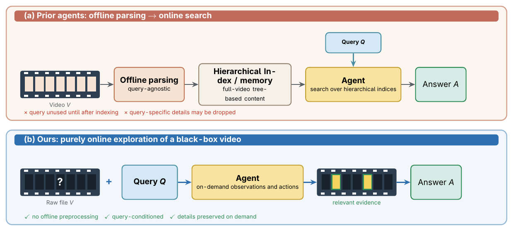
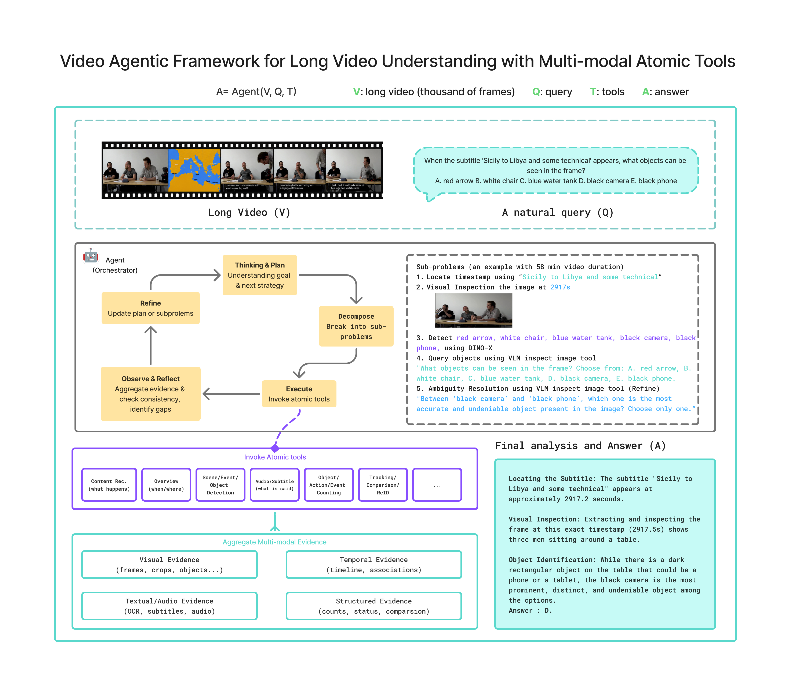
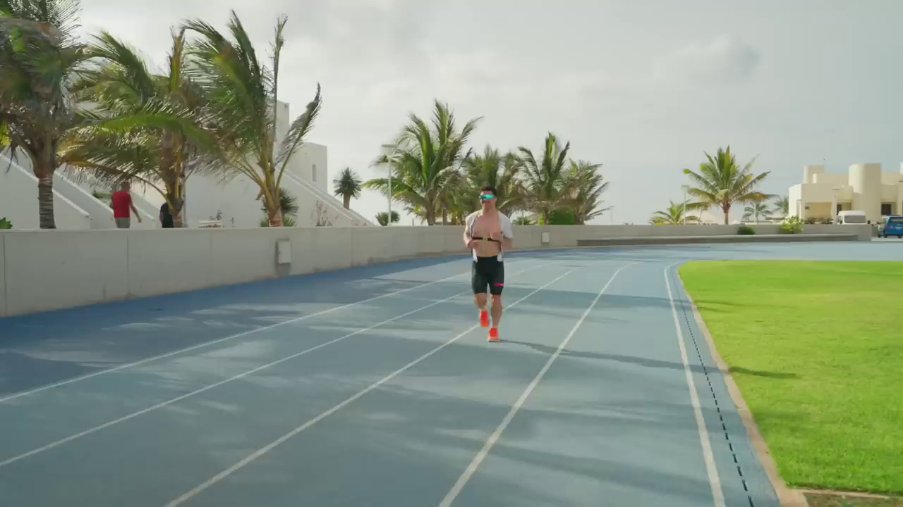
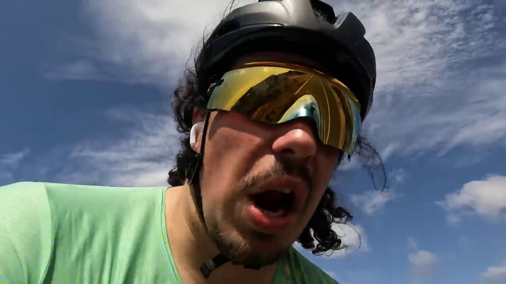
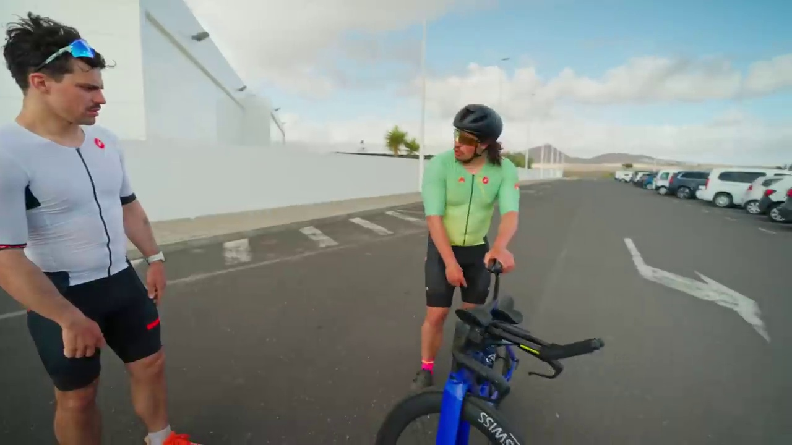

Online Video Agent Harness for Long Video Understanding
Abstract
Long-video understanding often behaves like a visual needle-in-a-haystack problem: query-relevant evidence is sparsely distributed, while packing dense frames into a single VLM context incurs context rot and high cost. We present VideoExpert-A, a purely online video-agent harness that starts from the raw video file and user query, plans and decomposes the task, invokes specialized expert tools on demand, and aggregates multimodal evidence with conflict resolution. Tools are guided by a data-driven taxonomy of atomic capabilities (scripts, VLMs, domain models). Across Video-MME-Long, LongVideoBench-Long, LVBench, and MINERVA, the agent is competitive with frontier LMMs under ~50k agent context—even on hour-long videos—and can bring a visually weak or text-only orchestrator into this range.
Method
Purely online: start from the raw video at query time, with no offline index. A capability taxonomy guides tool design; the harness handles planning, invocation, and budget control.


1. Online orchestration
Inputs are the video path and the query. The agent invokes tools on query-relevant spans on demand, without query-agnostic full-video preprocessing.
2. Capability mining
From MINERVA expert reasoning traces we mine 22 atomic capabilities in 5 categories, used as a blueprint for the tool space rather than an ad hoc toolkit.
3. Expert tools + harness
60+ tools (scripts / VLMs / detection, OCR, ASR, face, etc.). A ReAct loop with objective-evidence prompting and budget warnings curbs hallucination and non-termination.
Visual Perception Temporal Relation Spatial Relation Audio-Visual High-Level Reasoning
Experiments
Headline setup: Claude-Opus-4.6 as orchestrator with Gemini-3.1-Pro-preview VLM tools. About 50k agent context, far below dense frame packing or full-video preprocessing.
| Method | Type | VideoMME-L | LVBench | Context scale |
|---|---|---|---|---|
| Seed-2.0-pro | LMM | 85.5% | 76.4% | ~112k |
| Gemini-3.1-Pro-preview | LMM | 86.2% | — | ~179k |
| HAVEN | Agent | 82.8% | 71.7%* | Thousand-frame preprocess |
| VideoExpert-A | Agent | 85.1% | 76.5% | ~51–55k · tens of frames |
*HAVEN LVBench result is from the visual-only ablation shown in its paper's Table 3.
MINERVA: A visually weak or text-only orchestrator plus VLM tools matches frontier LMMs at a smaller context than 1,024-frame packing.
| Method | Type | Agent | VLM | Acc. | Context avg (min–max) | Agent Steps |
|---|---|---|---|---|---|---|
| Gemini-2.5-Pro-Thinking | LMM | — | — | 64.7%† | 65.5k (256f) | — |
| Gemini-2.5-Pro-Thinking | LMM | — | — | 66.2%† | 262.1k (1,024f) | — |
| Gemini-3-Pro-preview | LMM | — | — | 65.0%‡ | — | — |
| Doubao-Seed-1.8 | LMM | — | — | 62.4% | — | — |
| Doubao-Seed-2.0-pro | LMM | — | — | 66.5% | — | — |
| VideoExpert-A | Agent | GLM-5.2 | Qwen3.6-35B-A3B | 65.4% | 33.7k (17.7k–189.9k) | 35.6 |
| VideoExpert-A | Agent | Claude-Opus-4.6 | Qwen3.6-35B-A3B | 65.7% | 37.1k (25.0k–97.6k) | 27.5 |
†From the original MINERVA paper (1,515 questions, with ASR; context from reported frames at 256 tokens/frame). ‡Gemini-3-Pro-preview from the Doubao-Seed-1.8 paper. GLM-5.2 is text-only; Claude-Opus-4.6 is visually weak—gains come from the harness, not from packing the video into one context.
Trajectories
Real agent runs. The first is the paper case study; the rest are logged traces with tool-produced frames. Switch tabs to inspect each path—without packing the full video into one context.
VideoMME, qVZOKel-gpE. Coarse localization, then subtitle and local visual cross-checks.
A. Slacking off · B. Windy / difficult · C. Fell and hurt · D. Bike broke down, repairs took time
get_video_durationcheck_subtitle_existslocate_event_by_text("third day of training")caption_video_scenes(max_scenes=30)get_video_subtitle([1050s–1340s])query_segment_detail(1255s, 1335s, num_frames=6)
20:55 White-top waits
21:24 Green-top arrives later
22:00 After arrivalDivision of labor: coarse temporal routing narrows the search → subtitles and vision recover complementary evidence → the answer is deferred until conflicts are resolved.